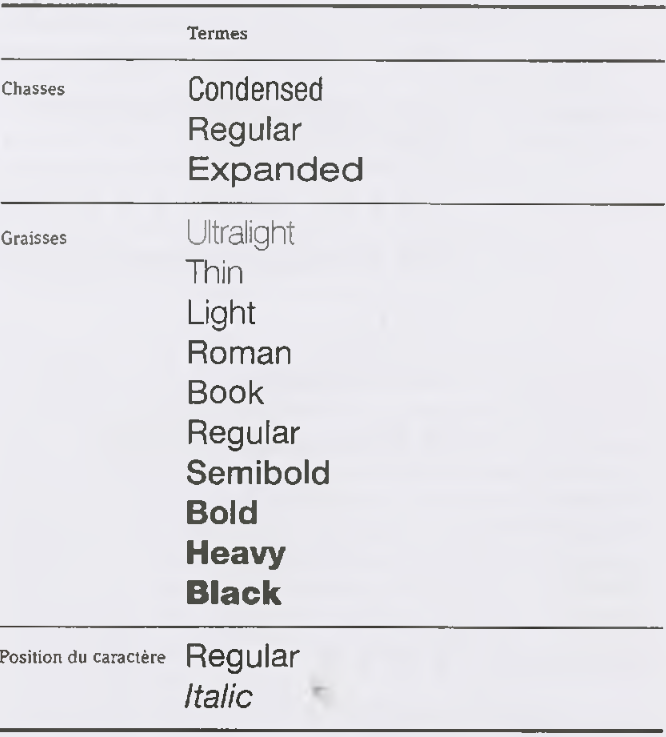
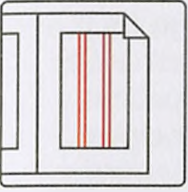

Manuel de graphisme
La typographie / La composition
La composition
Le sens ne repose pas uniquement sur les caractères. Ce sont l'utilisation logique de l'espace entre les carac tères, la façon dont les mots sont délimités les uns par rapport aux autres et la disposition des composants d'une phrase qui rendent le contenu intelligible.
L'interlettrage découle de la chasse d'une police de caractères. Cette dernière s'applique à la largeur du caractère réel (fig. 27), et comprend aussi les espaces avant et après (fig. 28), également appelés approches, c'est-à-dire les zones blanches nécessaires pour la préparation et l'assemblage des mots dans le texte. Le talus (-> p.61) détermine la distance entre les caractères depuis l'époque de la composition à chaud.
Les caractères d'une police ont des valeurs de lar geur, ou chasses, différentes. La chasse est déterminée par la largeur du caractère (-> p. 93, l'espacement d'une police de caractères) et la distance entre les lettres (-> p. 91-96, « Le design d'une police de caractères »).
L'espace mot découle de la chasse ou de la dis tance entre les lettres. L'augmentation de la distance entre les mots ou les lettres est appelée espacement. L'interlettrage ou l'espacement entre les mots doivent être cohérents dans un texte continu (-> p. 91-96, « Le design d'une police de caractères »)
L'interlignage


L'interlignage (fig. 29) est la distance entre les lignes séparées d'un caractère. Il est mesuré d'une ligne de caractères à une autre. À l'époque de la composition à chaud, les lettres étaient placées sur un corps (-> p. 61- 64, « Les systèmes de mesure »). Le terme « interlignage » remonte à cette époque, où des plombs ou blancs de fond étaient placés entre les lignes composées et faisaient office de « matériau aveugle », c'est-à-dire d'espace non imprimable, déterminant ainsi la taille de l'interlignage.
La composition sans interligne est l'expression utilisée lorsque la distance entre les lignes est identique à la taille du caractère (fig. 30 : la taille du caractère est de 12 points, la distance entre les lignes est de 12 points). Si la distance entre les lignes est supérieure à la taille du caractère, on emploie les mots composition interli gnée (fig. 31 : la taille du caractère est de 12 points, la distance entre les lignes est de 16 points).
Conseil : Dans un texte continu, pour parvenir à une composition équilibrée, l'espace blanc entre les lignes doit correspondre à une fois et demie la hauteur d'x (-> p. 74, fig. 23) de la police utilisée, un peu moins pour les en-têtes. Dans InDesign par exemple, l'interlignage automatique est de 120 pour cent - il sera donc de 12 points pour une taille de caractères de 10 points.
Conseil : Pour les formats de lecture (environ 9 à 12 points; -> p. 64), la règle suivante est censée produire une distance lisible entre les lignes : taille du caractère + 1,5 à 2,5 points.
Conseil : En principe, une composition en majuscules nécessite plus d'espace entre les lignes qu'une composition normale. Les colonnes étroites ont besoin de moins d'espace, et les colonnes larges ont besoin de plus de distance visible entre les lignes
Alignement de la composition
L'alignement est le positionnement horizontal du texte dans un espace restreint. La longueur d'une ligne est également un facteur important pour la lisibilité du texte. Ici, la taille du caractère et sa chasse sont directement liées l'une à l'autre. Pour l'œil, des lignes excessivement longues sont fatigantes, et si elles sont trop courtes, elles paraissent trop agitées et stressantes.
L'impression visuelle globale conférée par un texte est également déterminée, dans une grande mesure, par l'alignement de la composition. Un morceau d
texte composé peut être aligné de différentes façons : au fer à gauche (fig. 32), au fer à droite (fig. 33), centré (fig.34) et justifié (fig. 35). Le mode centré utilise une composition symétrique ou axialp.
Il existe aussi d'autres sous-variantes de ces modes de composition en typographie, tels que le fer en drapeau à gauche, le fer en drapeau à droite ou le fer justifié entrelacé. En composition justifiée, toutes les lignes sont de la même largeur. Cela signifie qu'il y aura inévitablement des espacements différents entre les mots. Si la composition justifiée n'est pas correcte ment exécutée, les écarts entre les mots (-> p. 88, espace mot) peuvent devenir des « trous » inélégants. Dans la composition à chaud, ces « trous » étaient qualifiés de « rivières ». En composition en drapeau, les distances entre les mots sont identiques sur toutes les lignes. Cela crée une structure interne apaisante. Une autre caractéristique de ce mode de composition est la longueur différente des lignes. Il existe différents types de composition en drapeau
Conseil : Trouver un bon réglage de composition en drapeau est un véritable défi. La surface en drapeau doit être travaillée manuellement après la pagination automatique, afin d'éviter les coupures de mot qui peu vent déformer la signification et entraîner un manque de rythme dans la façon dont les lignes tombent en raison du programme de composition électronique. Le gris typographique est créé par inertie optique : seuls les caractères séparés paraissent noirs. Le blanc des écarts se mélange avec la zone noire de la lettre et forme du gris, dans des conditions idéales. Cela se produit au sein de la structure de la lettre, du mot et de la ligne.
Conseil : Plissez les yeux!
Accentuation
La langue permet de mettre l'accent sur un mot au moyen de signaux acoustiques tels qu'une hauteur de voix élevée ou basse. Le caractère doit pouvoir représenter visuellement cet accent. L'accentuation est le moyen de souligner un ou plusieurs mots, ou des passages entiers d'un texte. Dans le paragraphe suivant, la typographie distingue différentes méthodes d'accentuation :
Les caractères accentués peuvent être composés en italique, en petites capitales , en caractères gras... À la différence des petites capitales , LES MAJUSCULES offrent une meilleure lisibilité. L'espacement est souvent employé pour simuler une police de type machine à écrire. Une taille de caractères plus grande, une police differente ou l'emploi de la cou leur constituent également des éléments de mise en valeur graphique.
L'italique est utilisé principalement comme une variante d'accentuation « discrète » par rapport à une police droite. À proprement parler, l'expression italique renvoie à un véritable script italique (fig. 36, en haut). Ses lettres se rapprochent d'une écriture cursive. Ce qu'on appelle une oblique n'est qu'une version inclinée générée par ordinateur du caractère gravé droit, sans la caractéristique typique de l'écriture manuscrite (fig. 36, en bas).
Les petites capitales sont des lettres haut de casse (-> p.74) placées au niveau des hauteurs d'x (-> p.74, fig. 23). La graisse des petites capitales est proportion nellement plus épaisse que celle des caractères haut de casse.
Conseil : Veillez toujours à utiliser de véritables petites capitales (fig. 37, en haut). L'épaisseur de la ligne optique des caractères haut de casse réduits électroniquement (fig. 37, en bas, fausses petites capitales) n'étant pas identique à celle (graisse visible) des lettres capitales, cela peut produire un effet désagréable.
Les initiales9 - également appelées lettres initiales, lettrines ou majuscules ornées - sont des lettres décorées afin de faire ressortir leur caractère. Les lettrines sont placées en début de chapitre ou de paragraphe. Elles sont plus grandes que le texte de base et peuvent occuper plusieurs lignes. L'initiale peut être placée de différentes manières, mais toujours sur la ligne de caractères du texte principal (fig. 38).
Conventions d'écriture
Les conventions d'écriture sont fondées sur l'expérience et la pratique. Ces dernières diffèrent d'une langue à l'autre. Par exemple, dans les pays germanophones, une virgule est utilisée dans les colonnes de chiffres pour indiquer les décimales, par exemple 2.000.000,00, alors que dans les pays anglophones, un point (signe décimal) est utilisé pour identifier ces mêmes décimales, par exemple 1 , 000 , 000 . 00
Points de suspension (ou ellipse). Si un mot n'est pas écrit dans son intégralité, la partie manquante est remplacée par trois points écrits sans espace avec le reste du mot. Si des mots entiers, de grandes portions de phrases et des phrases complètes sont omis, les points de suspension sont séparés du reste du texte par une espace située de chaque côté (fig. 39).
Les guillemets ouvrants et fermants sont utilisés différemment selon la langue concernée.
Le guillemet est séparé du mot par une espace insécable. ï/esp 1 42 43 2I+R Y T 44 n iti/ i —> 45 tëxtËf i L'apostrophe est attachée au mot sans espace. L'espace mot suivante est raccourcie. Note : Évitez d'utiliser de manière incorrecte le signe des pouces (fig. 40) comme une apostrophe (fig. 41). Le trait d'union n'est utilisé que pour les divisions de mots, pour les mots composés ou si certaines parties d'un mot sont omises. Le tiret est utilisé avec une espace avant et après (fig. 42). Lorsque ce symbole signifie « jusqu'à », il est utilisé avec des espaces fines. Les signes mathématiques (-» p. 70 et 75, les chiffres arabes) doivent être séparés du chiffre par une espace fine (fig.43). Les chiffres de tableau ont une largeur uniforme (-> p.82, valeurs de largeur) et sont utilisés lorsque des lignes de chiffres doivent être disposées les unes sous les autres, en colonne, comme dans une compo sition en tableau (fig. 44).
En composition à chaud, la largeur des chiffres de tableau était d'un demi-cadratin, ce qui, par exemple, conférait au chiffre « 1 » beaucoup de place. Ce problème persiste aujourd'hui avec les polices qui ne disposent pas de chiffres proportion nels. Dans un texte continu, les chiffres normaux, bas de casse, ou même les chiffres en petites capitales sont utilisés. Les chiffres bas de casse, aussi appelés chiffres elzéviriens, disposent, à l'instar des lettres bas de casse, de jambages inférieurs et supérieurs et s'inté grent de façon harmonieuse à une composition. Les symboles des notes de bas de page, identifiés en composition par des nombres en exposant ou des astérisques, sont placés avec un petit écart entre eux et le texte (fig. 45). Ce symbole est également placé
à une légère distance du texte qui le suit dans le corps de la note de bas de page. Le symbole degré est placé avec une espace fine après le chiffre. La barre de fraction est centrée au sein d'espaces fines (fig.46). Les signes pour cent et pour mille (-> p. 78) sont séparés des chiffres par une espace fine. Les points d'exclamation, les points d'interrogation et les points-virgules (-> p.78) sont séparés du texte précédent par une espace fine, les deux-points par une espace insécable. Une espace mot (également appelée « blanc ») est utilisée pour les espaces entre les mots d'un texte continu. Elle est disponible en demi-chasse, quart de chasse et huitième de chasse
La mise en page


Jan Tschichold déclare à propos de la surface de composition : « Un positionnement correct d'un élément de composition, aussi réussi qu'il puisse être, est aussi important que l'exécution soignée de la com position elle-même ! Un positionnement maladroit peut tout gâcher10. » La surface de composition est la surface occupée par le texte continu sur une page double. Une surface de composition organisée avec succès, tout en offrant des avantages purement rationnels, garantit également des avantages financiers, particuliè rement lors de la phase de prépresse, du clichage et des phases de production (-> ch. « La production », p. 194). Il existe différentes façons d'observer la cons truction de surfaces de composition, par rapport à la structure, à l'esthétique, à la psychologie, etc.
Dans ce cas, le type, l'objectif et l'échelle de l'imprimé sont des facteurs déterminant les paramètres séparés. Le titre courant (fig. 52) et les notes de bas de page sont inclus lorsque l'on arrange la surface de composition. En revanche, les numéros de page (fig. 53) et les notes marginales (fig. 54) ne font pas partie de l'arrangement classique de la surface de composition. Lorsque l'on conçoit un ouvrage ou d'autres « travaux à forfait sur double page11 » (terme utilisé dans le passé pour désigner les imprimés commerciaux à échelle réduite, par opposition aux imprimés périodiques), les pages de droite et de gauche sont considérées comme une paire, une unité graphique.La surface de composition est généralement dis posée de la même façon à travers toute la publication (-> ch. « Le graphisme », p. 46-48, « La grille »). Les surfaces non imprimées remplissent une fonction esthétique et offrent un repos pour l'œil (-> p. 65-66, « Perception et comportement de lecture »). Au sens classique, la variation idéale de la proportionnalité est la section dorée (fig. 47 : proportion de surface de la « section dorée », conçue par Jan Tschichold). Sur une double page, les bords extérieurs ou les marges extérieures (fig. 48) sont généralement plus larges que les bords intérieurs ou petit fond (fig. 49). Cela est dû au fait que le blanc de fond se reflète visuellement lorsqu'une double page est ouverte, et se voit par conséquent doublé
Conseil : La largeur des bords extérieurs est à peu près la somme de celle des bords intérieurs
Le folio est le terme typographique pour le numéro de page ou le numéro de chapitre. Un titre courant est un numéro de page ou de chapitre auquel est ajouté du texte informant sur l'auteur, les mots-clés, etc. La surface de composition est décrite au moyen des termes techniques suivants : grand fond (fig. 48), petit fond (fig. 49), bas de page (fig. 50), en-tête (fig. 51), titre courant (fig. 52), numéro de page (fig. 53) et notes marginales (fig. 54). Les en-têtes (manchettes, titres, rubriques; -> p .67) fournissent des informations brèves sur le contenu, et structurent le texte. Ils doivent être percutants et se démarquer du reste du texte. Les caractères gras ou italiques sont souvent utilisés pour les démarquer. Un texte est divisé en paragraphes pour le rendre plus lisible et compréhensible. Ici, l'indentation est un instrument important pour identifier de nouveaux paragraphes et structurer le texte. Sur les premiers imprimés, de la place était laissée en début de paragraphe pour le caractère d'alinéa H, ajouté à la main en rouge par le fondeur
Conseil : L'indentation ne doit pas être trop importante.
Une veuve (fig. 55) est la dernière ligne d'un paragraphe, pas tout à fait complète, lorsqu'elle se retrouve sur la première ligne d'une colonne. Une orpheline (fig. 56) est la première ligne d'un paragraphe, qui apparaît seule à la fin d'une colonne ou sur une page créée par un saut de page manuel.
La typographie / Le script
Hauts de casse et bas de casse
Les lettres capitales sont appelées majuscules ou plus rarement hauts de casse. Les petites lettres sont appelées minuscules ou bas de casse (-» p. 69). Les majuscules sont basées sur trois formes géométriques de base : triangle, cercle et carré (-» ch. « Le graphisme », p .29-30). Ici, les formes et contrastes directionnels sont des points fondamentaux de l'aspect des lettres (-» fig. 19 à 21, p. 73). La figure 22 présente le principe structurel d'un « M » Renaissance en haut de casse, d'après Albrecht Dürer (1471-1528).
Astuce : Voir aussi p. 91-96, « Le design d'une police de caractères »
Anatomie d'une lettre
La somme de tous les éléments d'une lettre exprime les qualités essentielles d'une police de caractères
Outre les éléments visibles, les zones de blanc entre les lettres jouent un rôle crucial. L'intérieur d'une lettre est appelé le blanc de lettre (-> p. 82, « La composition »). Outre l'espace normale entre deux mots, dénommée espace mot, il existe toute une variété de blancs. Le cadratin (em), terme issu de la composition à chaud, est un blanc dont la largeur est égale au corps (un cadratin de corps 12 points a une largeur de 12 points)
Le jeu de caractères
Le jeu de caractères d'une police consiste en « différents caractères tels que des lettres (caractères sonores), des figures (caractères quantitatifs) et un nombre indéfini de caractères permettant de contrôler l'écriture (par exemple, des points, parenthèses et guillemets)6 ».
Ponctuation et caractères spéciaux
La ponctuation et les caractères spéciaux sont utilisés pour appliquer structure, ordre et valeur. Les marques de ponctuation structurent le texte en unités sémantiques et reflètent les modulations de la voix
Les chiffres arabes
Le caractère exprimant la quantité est appelé chiffre (ou caractère numérique). Un nombre est produit en combinant différents chiffres (-> p. 70, « Les origines du caractère »). En typographie, on distingue également les chiffres bas de casse et haut de casse (-> p. 87).
Les ligatures
Une combinaison de plusieurs lettres fusionnées ensemble est appelée ligature. L'esperluette, ou « et » commercial, en est un exemple. Jan Tschichold dit de ce symbole : « [...] le "et" manuscrit, qui vient du latin et, est une ligature d'un type très particulier car il apparaît sous plusieurs formes. Il s'agit toujours d'une fusion étroite de lettres, dans laquelle une portion d'une lettre se fond dans une portion d'une autre, ou forme cette portion dans le même temps7. »
La famille de caractères
Une famille de caractères est l'ensemble complet de caractères disponibles pour une police. La police, terme employé pour mentionner un jeu complet de caractères, inclut tous les caractères d'un même type (par exemple, Helvetica New 23 Light Extended). A l'origine, elle faisait référence à un jeu de caractères gravé dans le métal. Les systèmes de caractères sont des familles de caractères étendues, également appelées systèmes hybrides. Ces familles ne se distinguent pas seulement en termes de positions, chasses ou graisses, mais également en termes d'apparence. Ainsi, des familles différentes (avec et sans empattements) sont réunies dans une famille plus large partageant le même système et les mêmes proportions. La figure 24 présente les différentes caractéristiques stylistiques que peut avoir une lettre dans le système de caractères Compatil, tout en conservant les mêmes proportions.
Astuce : Voir aussi p. 82-84, « La composition »
Les polices non proportionnelles
Les polices monospace, également dénommées polices à chasse ou à pas fixe, appartiennent à la catégorie des polices non proportionnelles, dans lesquelles tous les caractères et espaces mots ont la même largeur (-» p. 82). Les espaces mots sont modifiés par la composition. InDesign dispose d'une option d'espacement optique permettant d'améliorer la lisibilité. Parmi les polices à chasse fixe figurent les caractères de machine à écrire, ainsi que la police Courier (fig. 25). Cette dernière se distingue entre autres par ses empattements fortement marqués (-> p.80), qui remplissent visuellement l'espace blanc du caractère « i » par exemple.
Le graphisme / Maquette et mise en page
Maquette et mise en page
Le brouillon ou prémaquette donne au graphiste et à toutes les personnes impliquées dans le processus de création (y compris le client) un aperçu de la version finale. Il fait donc office de base de liaison pour toutes les décisions sur la progression du projet. Ici, un briefing préliminaire précis (-> ch. « L'orga nisation », p. 314-317) permet de poser les fondations d'une création graphique réussie. Le design de la maquette peut être divisé en plusieurs phases, comme indiqué ci-dessous. Le croquis présente l'idée conceptuelle de façon grossière, souvent sous la forme d'un dessin à la main, et fournit l'effet général
Conseil : Chaque maquette doit être basée sur des croquis et griffonnages.
La maquette grossière est développée à partir de croquis. Son format est celui du produit final; tous les éléments sont dessinés de façon plus détaillée, afin de pouvoir évaluer l'effet global. La copie au net ou le bon à tirer est la dernière étape, et la phase préliminaire pour le prépresse. Une prémaquette est un spécimen imprimé, réaliste ou proche de la réalité, un modèle de présentation. Le terme « mise en page » définit le moment de la composition d'une maquette et de la détermination des procédés techniques d'impression.
Procédé de mise en page
La mise en page ne devrait pas démarrer tant que le contenu n'est pas fixé et totalement planifié, le texte rédigé et les images choisies. Si les illustrations ne sont pas disponibles, vous pouvez vous les procurer auprès d'agences spécialisées (-> « Conseils et ressources », p. 55), et acquérir les licences (-> ch. « Les aspects juri diques », p.297). Si le document est entièrement nouveau, alors il est conseillé de suivre les étapes citées à la page suivante.
1. Définir le format de la page. 2. Créer le document. 3. Définir la surface de la page composée. 4. Définir la grille avec le texte et les éléments stylistiques. 5. Mise en page et corrections finales.
La section dorée et les formats de page harmonieux
D'après Jan TschichokF, les proportions des pages présentées ici (fig. 100 à 106) sont particulièrement bien équilibrées (formats de page harmonieux). Le taux 5:8 (fig. 102) correspond à la section dorée; les taux de la section dorée (-» ch. « La typographie », p. 89) sont généralement simplifiés dans la pratique. La section dorée est exprimée parle rapport 1:1,618. Ce n'est pas seulement un résumé des proportions idéales utilisées en architecture et dans l'art, mais également un rapport que l'on peut retrouver dans la nature. La section dorée consiste à diviser une ligne en deux sections inégales (fig. 106), dans laquelle la petite section (A) établit un rapport avec la plus grande (B), celle-ci établissant à son tour un rapport avec la somme des deux sections, à savoir, la ligne entière. Si le format n'est pas clairement déterminé lors du briefing (-» ch. « L'organisation », p.314), il peut être intéressant d'effectuer des tests avec des formats de page. Mais attention : les formats avec des pages ayant presque la même longueur n'attirent pas l'attention. La section dorée est basée sur la suite de Fibonacci 0, 1, 1, 2, 3, 5, 8, 13, 21, 34, 55, 89, 144, 23322 23... Le nombre suivant étant la somme des deux précédents
La grille
La grille, également appelée grille de construction, permet d'organiser une surface. Elle facilite la création d'une maquette claire et cohérente dont on peut appréhender la continuité et accélère la mise en page proprement dite. Une grille divise la surface en cours de conception de façon à ce que la surface de la page composée soit constituée d'une grille de champs (champs de grille), dans lesquels tous les éléments stylistiques, tels que les illustrations ou le texte, peuvent être disposés (fig. 107). Cette grille peut être conçue d'après la suite de Fibonacci
Liste de contrôle :
Les éléments suivants doivent être établis avant de commencer la mise en page : 1. Format. 2. Marges et surface de la page composée. 3. Colonnes (largeur, espacement, hauteur). 4. Police de caractères de base et format en points (nombre de caractères dans une colonne). 5. Espacement de la colonne. 6. Division de la colonne en champs de grille. 7. Types de marges. 8. Pagination (-> ch. « La typographie », p.89). 9. Climat couleur.
Les longues lignes de texte fatiguent l'œil et rendent la lecture plus difficile. Pour éviter les lignes de texte excessivement longues (-» ch. « La typographie », p.83, « Alignement de la composition »), la surface de la page composée est divisée en colonnes (fig. 108). Cette sur face peut contenir une ou plusieurs colonnes. La police de caractères de base (-» ch. « La typographie », p. 65- 66, « Perception et comportement de lecture ») et la largeur définie ont un rôle important.
Conseil : Rappelez-vous que plus la surface de la page composée comporte de colonnes, moins elle peut accep ter de texte. La distance entre les colonnes de texte doit clairement démarquer chacune d'entre elles. Nous vous conseillons de baser l'espacement des colonnes sur la largeur de la paire de lettres « mi » dans la police de caractères utilisée.
Le graphisme / Le design d'entreprise

La grille linéaire de base peut vous aider à placer toutes les lignes dans le bon registre; les lignes de toutes les pages sont placées exactement sur la même ligne, ou au registre. La position de la ligne de base dépend de l'interlignage (-» ch. « La typographie », p. 82) du texte de base; elle commence soit sur le bord supérieur de la page soit sur celui de la surface de la page composée (fig. 109). En règle générale, seul le texte de base est placé sur la ligne de base
Conseil : Si la surface de la page composée comprend des images, la grille de base est décalée vers le haut par la taille de l'espace entre le bord supérieur de la surface et les hampes des lignes de texte (fig. 110)